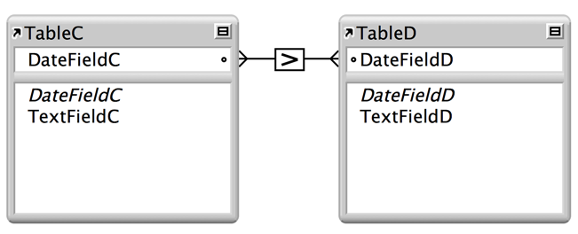

Home > Designing and creating databases > Working with related tables and files > About the types of relationships > About relationships using comparative operators
About relationships using comparative operators In a comparative relationship, you use one or more of the following operators to compare match field values in the two related tables. The relationship returns related records when the comparison evaluates successfully, according to the criteria you establish. Relational operator Matches these records = Values in match fields are equal ≠ Values in match fields are unequal < Values in the left match field are less than values in the right match field ≤ Values in the left match field are less than or equal to values in the right match field > Values in the left match field are greater than values in the right match field ≥ Values in the left match field are greater than or equal to values in the right match field x All records in the left table are matched to all records in the right table, regardless of the values in the match fields For example:  In this relationship, DateFieldC and DateFieldD are match fields. Records in TableD are related to records in TableC that have a later DateFieldC value. Records in TableC are related to records in TableD that have an earlier DateFieldD value. For example, if a record in TableC has a DateFieldC value of 12/11/2014, all the records in TableD with a DateFieldD value of 12/10/2014 or earlier are related to it. In TableD, if a record has a DateFieldD value of 12/11/2014, all records in TableC with DateFieldC values of 12/12/2014 or later are related to it. Related topics About single-criteria relationships About multi-criteria relationships About relationships that return a range of records About self-joining relationships